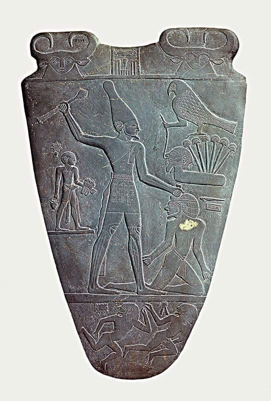
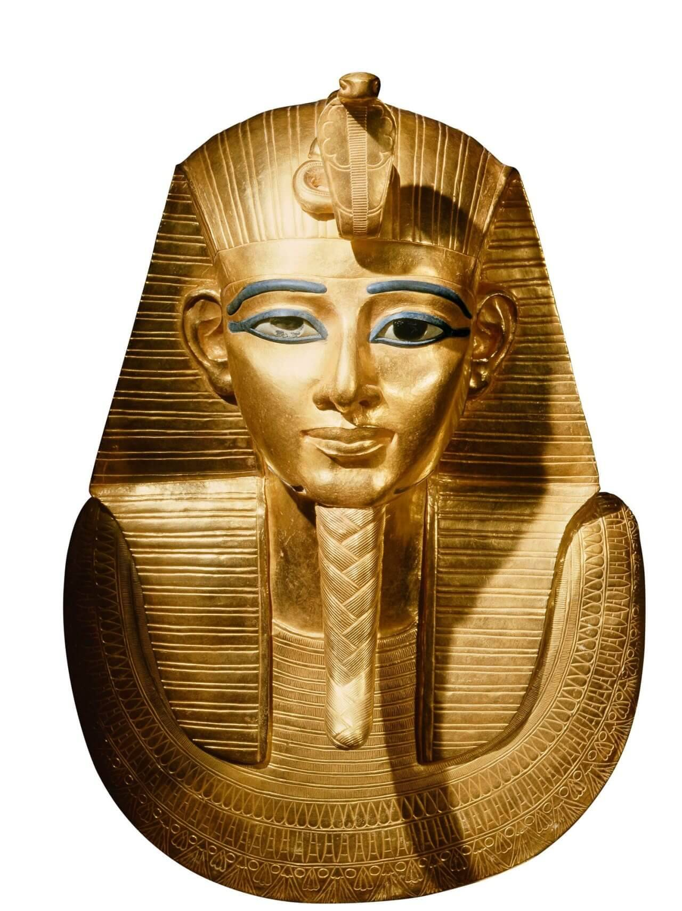
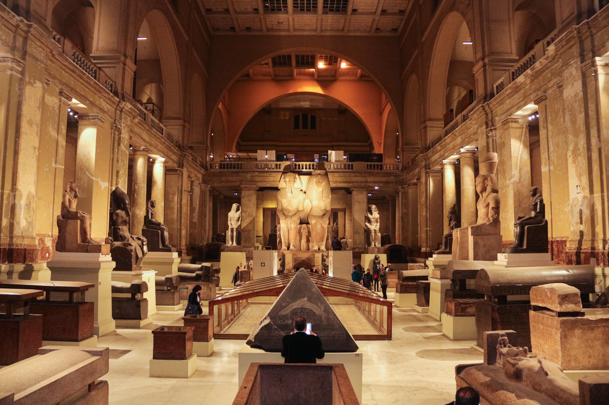

تاريخ المبنى العريق
يعتبر المتحف المصري بالتحرير من أقدم المتاحف في الشرق الأوسط، تم افتتاحه عام 1902 في عهد الخديوي عباس حلمي الثاني. صممه المعماري الفرنسي مارسيل دورنون على الطراز الكلاسيكي الحديث، وهو يطل على ميدان التحرير الشهير بوسط القاهرة.
كنوز لا تقدر بثمن

لوحة الملك نارمر

كنوز تانيس الملكية

البهو الكلاسيكي
يحتوي المتحف على طابقين؛ الأول يضم الآثار الثقيلة مثل التوابيت واللوحات والمنحوتات الضخمة، بينما يضم الطابق العلوي المخطوطات والتماثيل الصغيرة والأدوات اليومية والمومياوات الملكية.